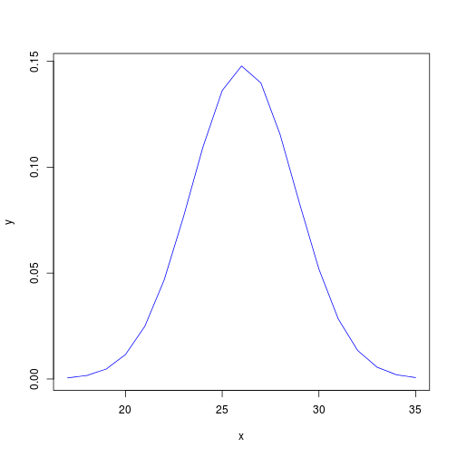

Downloads
Estatística inferencial
Curso Ninja de Estatística Aplicada com R para Ciências da Saúde
Henrique Gomide
CREPEIA, PET - Psicologia
Antes de começar
Carregando o banco da aula e pacotes
## Loading required package: psych
## Loading required package: epicalc
## Loading required package: foreign
## Loading required package: survival
## Loading required package: splines
## Loading required package: MASS
## Loading required package: nnet
## Attaching package: 'epicalc'
## The following object is masked from 'package:psych':
##
## alpha
dados <- read.csv(file.choose(), header=TRUE, sep=",")
require(ggplot2)
require(lattice)
Resumão
- Introdução a análise inferencial
- Distribuição normal
- Erro padrão
- Intervalo de confiança
Introdução a análise inferencial
- Uma das principais funções da estatística é a inferência
- A inferência estatística permite que através de uma amostra bem escolhida, conheçamos com razoável precisão a população.
Distribuições
- Existem diferentes tipos de distribuições de dados (binomial, poission, normal...)
- Uma das mais utilizadas nas ciências da saúde é a distribuição normal
Distribuição normal

Distribuição normal
- Ex. baseado nos escores da escala de auto estima
autoMean <- mean(dados$somaescala, na.rm = TRUE)
autoSd <- sd(dados$somaescala, na.rm = TRUE)
x <- 17:35
y <- dnorm(x, mean = autoMean, sd = autoSd)
Distribuição normal
plot(x = x, y = y, type = "l", col = "blue")

Erro padrão
- É utilizado para identificar o quão precisa é a estimativa da média da população.
- Ex. Simulação da população a partir dos escores da escala de auto-estima.
simAe <- rnorm(1000, mean = autoMean, sd = autoSd) # simulação
amostra50 <- sample(simAe, size = 50) # amostra aleatório de n = 50
amostra100 <- sample(simAe, size = 100) #amostra aleatório de n = 100
describe(simAe)
## var n mean sd median trimmed mad min max range skew kurtosis
## 1 1 1000 26.09 2.65 26.09 26.11 2.66 17.24 33.91 16.67 -0.06 -0.13
## se
## 1 0.08
Erro padrão (cont.)
Comparando amostras 50 vs 100
describe(amostra50)
## var n mean sd median trimmed mad min max range skew kurtosis se
## 1 1 50 26.1 2.3 25.69 26.04 2.33 21.91 31.33 9.42 0.19 -0.75 0.33
describe(amostra100)
## var n mean sd median trimmed mad min max range skew kurtosis
## 1 1 100 25.97 2.85 26 25.99 3.08 19.78 33.78 14 -0.01 -0.51
## se
## 1 0.29
Intervalo de confiança
- Informa uma estimativa do quão perto estamos do valor de uma população.
- Adota-se geralmente um grau de confiança de 95%.
Intervalo de confiança para corajosos
Na mão
se <- sd(amostra50)/sqrt(50)
lower <- mean(amostra50) - 1.96 * se
upper <- mean(amostra50) + 1.96 * se
c(lower, upper)
## [1] 25.46 26.74
Intervalo de confiança para peguiçosos
Usando pacote 'epicalc'
require(epicalc)
ci(amostra50)
## n mean sd se lower95ci upper95ci
## 50 26.1 2.3 0.3253 25.45 26.75